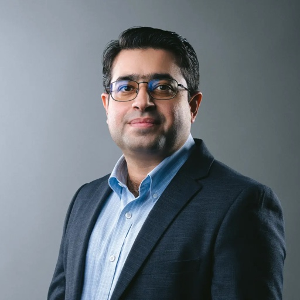
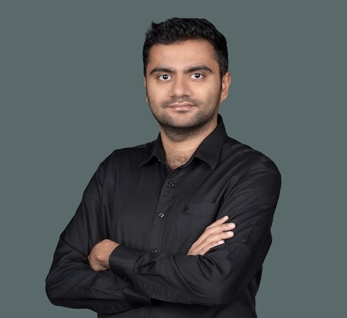
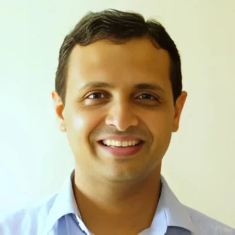

ORGANIZERS
Organizing committee and program committee, based in Finland, Switzerland, Italy, the United Arab Emirates, and India.
Organizing Committee
Hao Dong
Hao Dong is a Principal Investigator at ELLIS Institute Finland and an Assistant Professor at Tampere University. He received his Ph.D. from ETH Zurich. His research focuses on robust, reliable, and adaptive machine learning, in particular on how foundation models and agentic systems can adapt and generalize safely to new environments, with applications in robotics, healthcare, and industrial monitoring.

Muhammad Haris Khan
Muhammad Haris Khan is an Associate Professor at the Mohamed Bin Zayed University of Artificial Intelligence (MBZUAI), Abu Dhabi. Before joining MBZUAI he was a Research Scientist at the Inception Institute of Artificial Intelligence. His work is organized around visual robustness and generalization under distribution shift, reliable prediction through calibration and uncertainty estimation, and label-efficient, scalable learning for resource-conscious vision systems.
Olga Fink
Olga Fink is an Associate Professor at EPFL, where she heads the Intelligent Maintenance and Operations Systems laboratory. Her research focuses on physics-informed machine learning, graph neural networks, foundation models for engineering systems, uncertainty quantification, and trustworthy AI for industrial and critical-infrastructure applications. She holds an ERC Consolidator Grant and is a Fellow of the Prognostics and Health Management Society.
Alexandros Iosifidis
Alexandros Iosifidis is a Professor at Tampere University and Associated Faculty of the ELLIS Institute Finland. Before that he was a Professor in Machine Learning and Computational Intelligence at Aarhus University, Denmark. His research focuses on statistical machine learning, deep learning, and neural networks, with applications to visual information processing, robot perception, and financial modeling.

Rishabh Lalla
Rishabh Lalla is a Doctoral Researcher in the Computer Vision Department at MBZUAI. His interests include domain adaptation, object detection, and robust recognition. He was previously a Research Associate at IIT Hyderabad.
Juho Kanniainen
Juho Kanniainen is a Professor at Tampere University and Associated Faculty of the ELLIS Institute Finland. His research focuses on machine learning, statistical computing, and mathematical modeling for time-series analysis and graphs, with an emphasis on limit order book markets and information cascades, in finance and in other application domains.

Vineeth N Balasubramanian
Vineeth N Balasubramanian is a Professor at the Indian Institute of Technology Hyderabad, currently also with Microsoft Research. His research covers deep learning, machine learning, and computer vision, with a focus on continual learning, domain adaptation, domain generalization, and learning with limited labeled data. He is a Fellow of the Indian National Academy of Engineering and a recipient of the Google Research Scholar Award.
Elisa Ricci
Elisa Ricci is a Professor at the University of Trento and Head of the Deep Visual Learning research unit at Fondazione Bruno Kessler (FBK). Her research focuses on deep learning, in particular domain adaptation, continual learning, and self-supervised methods, with applications in computer vision, multimedia analysis, and robot perception.
Program Committee
Confirmed reviewers; the pool will grow before the deadline.
Chetan Arora (IIT Delhi) • Karthik Nandakumar (MBZUAI) • Fahad Shamshad (MBZUAI) • Akhtar Munir (MBZUAI) • Mohsen Ali (Information Technology University, Pakistan) • Zachary Izzo (NEC Labs) • Da Li (Samsung Research UK) • Weicheng Xie (Shenzhen University) • Linlin Shen (Shenzhen University) • Ankit Jha (LNMIIT Jaipur) • Ujjal Kr Dutta (SatSure Analytics) • Cheng Luo (Monash University) • Soma Biswas (IISc Bengaluru) • Moloud Abdar (Deakin University) • Aniruddha Mahapatra (Adobe Research) • Aveen Dayal (Dolby Laboratories) • Dwarikanath Mahapatra (Khalifa University)